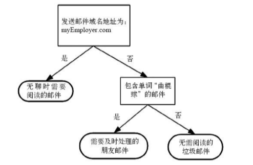
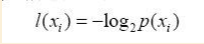
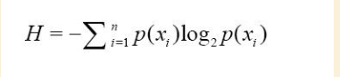
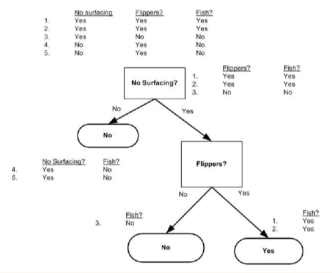

什么是决策树
决策树的概念
如图1:

图1中就是一个决策树,长方形代表判断模块,椭圆形代表终止模块,表示已经得出结论,可以终止运行.从判断模块引出的左右箭头称作分支.
它可以到达另一个判断模块或者终止模块.
决策树的特点
- 优点:计算复杂度不高,输出结果易于理解,对中间值的缺失不敏感,可以处理不相关特征数据
- 缺点:可能会产生过度匹配问题
- 使用数据类型:数值型和标称型
决策树的一般流程
- 收集数据:可以使用任何方法
- 准备数据:树构造算法只适用于标称型数据,因此数值型数据必须离散化
- 分析数据:可以使用任何方法
构造树完成之后,我们应该检查图形是否符合预期
- 训练算法:构造树的数据结构
- 测试算法:使用经验树计算错误率
- 使用算法:此步骤可以适用于任何监督学习算法
如何构建决策树
接下来我们将学习如何从一堆原始数据中构造决策树
计算信息增益来度量信息
我们需要解决的第一个问题就是,当前数据集上哪个特征在划分数据分类时起决定性作用.为了找到决定性的特征,划分出最好的结果,
我们必须评估每个特征.
如何对数据进行评估
划分数据集的最大原则是:将无序的数据变得更加有序.
因此,我们可以在划分数据前后使用信息论量化度量信息的内容.在划分数据集之前之后信息发生的变化称为信息增益,
知道如何计算信息增益,我们就可以计算每个特征划分数据集获得的信息增益,或得信息增益最高的特征就是最好的选择.
集合信息的度量方式称为香农熵或者简称熵(这个名字来源于信息论之父克劳德-香农)
熵定义为信息的期望值,在明晰这个概念之前,我们必须知道信息的定义.
信息的定义:如果待分类的事物可能划分在多个分类之中,则符号Xi的信息定义为

其中P(Xi)是选择该分类的概率.
为了计算熵,我们需要计算所有类别所有可能值包含的信息期望值,通过下面的公式得到:

其中n类是分类的数目
计算给定数据集的香农熵
利用上面的公式,对数据集求香农熵,得出信息增益,度量信息量
1.计算有多少行
2.对每一行的最后一个label进行统计.(用一个字典可以方便的解决这个问题,key是label,value是次数)
3.对每个label求概率
4.运用熵公式求值
先创建一个数据集
def createDataSet():
dataSet=[[1,1,'maybe'],
[1,1,'yes'],
[1,0,'no'],
[0,1,'no'],
[0,1,'no']]
labels=['no surfacing','flippers']
return dataSet,labels
步入正题
from math import log
def calcShannonEnt(dataSet):
numEntries=len(dataSet)
labelCounts={}
for featVec in dataSet:
currentLable=featVec[-1]
if currentLable not in labelCounts.keys():
labelCounts[currentLable]=0
labelCounts[currentLable]+=1
shannonEnt=0.0
for key in labelCounts:
prob=float(labelCounts[key])/numEntries
shannonEnt-=prob*log(prob,2)
return shannonEnt
注意:求出的熵值越高,表示混合的数据也越多.也就是这个数据集中的分类也越多.
合理划分数据集
得到熵之后,我们就可以按照获取最大信息增益的方法划分数据集.
我们将对每个特征划分数据集的结果计算一次信息熵.然后判断按照哪个特征划分数据集是最好的划分方式.
也就是对划分后的数据集求信息熵,熵值越小,表示数据划分的越好.
划分数据集
def splitDataSet(dataSet,axis,values):
retDataSet=[]
for featVec in dataSet:
if featVec[axis]==values:
reducedFeatVec=featVec[:axis]
reducedFeatVec.extend(featVec[axis+1:])
retDataSet.append(reducedFeatVec)
return retDataSet
说明:该代码需要三个参数
+ 参数1:数据集
+ 参数2:axis是按照第几个特征划分
+ 参数3:values是该特征的值
我们要遍历数据集中的每个元素,一旦发现符合要求的值,则将其添加到新创建的列表中.
这里要注意python中,对列表操作的两个方法的不同之处.extend和append
选择最好的数据集划分方式
接下来我们遍历整个数据集,循环计算香农熵和splitDataSet()函数,找到最好的特征划分方式.
熵计算将会告诉我们如何划分数据集是最好的数据组织方式.
数据需要满足的要求:
- 1.数据必须是一种由列表元素组成的列表,而且所有的列表元素都要具有相同的数据长度.
- 2.数据的最后一列或者每个实例的最后一个元素是当前实例的类别标签.
def chooseBestFeatureToSplit(dataSet):
# 返回一共有几个特征
numFeatures=len(dataSet[0])-1
baseEntropy=calcShannonEnt(dataSet)
bestInfoGain=0.0
bestFeature=-1
# 遍历特征,一个特征一个特征的来处理
for i in range(numFeatures):
featList=[example[i] for example in dataSet]
print "featList \n",featList
uniqueVals=set(featList)
newEntropy=0.0
# 对该特征的所有可能取值的方式进行划分,然后求信息熵,最后把该特征的信息增益求出来
for value in uniqueVals:
# 对每个特征的不同值进行划分数据
subDataSet=splitDataSet(dataSet,i,value)
prob=len(subDataSet)/float(len(dataSet))
newEntropy+=prob*calcShannonEnt(subDataSet)
infoGain=baseEntropy-newEntropy
# 信息增益越大,说明用该特征划分的数据集计算出的信息熵越小,也就是划分的越好.
# 在此跟上一次的划分进行比较,得出最合适的特质
if (infoGain>bestInfoGain):
bestInfoGain=infoGain
bestFeature=i
return bestFeature
递归构建决策树
有了上面的准备后,我们要开始把上面的方法组合起来,构建决策树了.
目前我们已经知道了从数据集构建决策树算法所需要的子功能模块,其工作原理如下:
得到原始数据集,然后基于最好的属性值划分数据集,由于特征值可能多于两个,因此可能存在大于两个分支的数据集划分.
第一次划分后,数据将被向下传递到树分支的下一个节点,在这个节点上,我们可以再次划分数据.因此我们可以采用递归的原则处理数据集.
递归结束的条件是:
程序遍历完所有划分数据集的属性,或者每个分支下的所有实例都具有相同的分类,则得到一个叶子节点或者终止块.
任何到达叶子节点的数据必然属于叶子节点的分类

def majorityCnt(classList):
classCount={}
for vote in classList:
if vote not in classCount.keys():classCount[vote]=0
classCount[vote]+=1
sortedClassCount=sorted(classCount.iteritems(),key=operator.itemgetter(1),reverse=True)
return sortedClassCount[0][0]
def createTree(dataSet,labels):
# 获取该数据集的所有label,存放到一个列表中
classList=[example[-1] for example in dataSet]
# 判断:如果在这个数据集的列表中,第一个元素的个数和这个列表的元素个数相等.说明这个数据集已经划分完全了.
if classList.count(classList[0])==len(classList):
return classList[0]
if len(dataSet[0])==1:
return majorityCnt(classList)
# 获取最合适的分类特征
bestFeat=chooseBestFeatureToSplit(dataSet)
#
bestFeatLabel=labels[bestFeat]
myTree={bestFeatLabel:{}}
# 得到列表包含的所有属性值
del(labels[bestFeat])
featValues=[example[bestFeat] for example in dataSet]
uniqueVals=set(featValues)
for value in uniqueVals:
subLabels=labels[:]
myTree[bestFeatLabel][value]=createTree(splitDataSet(dataSet,bestFeat,value),subLabels)
return myTree